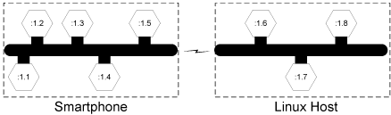
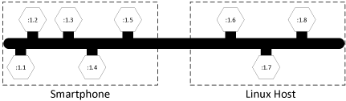
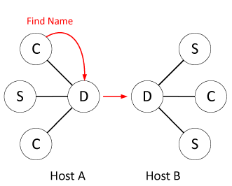
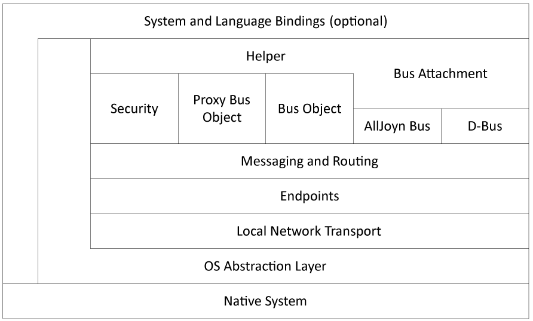

AllJoyn™ Standard Core
概览
AllJoyn 框架是一个开源操作系统，为强调移动性，安全性以及动态配置的分布式应用程序提供运行环境。AllJoyn 系统可处理异构分布式系统所固有的复杂 问题，包括可移动性介入后所带来的特殊问题。借此帮助，程序开发者可以专注于解决核心问题。
AllJoyn 框架是“平台无关”的，其设计初衷为尽最大可能独立于运行设备的操作系统，硬件及软件特性。AllJoyn 框架被设计应用于 Microsoft Windows, Li- nux, Android, iOS, OS X, 以及 OpenWRT 平台。
亲近性与移动性一值保留在 AllJoyn 框架的设计理念当中。在移动环境中，设备会不停地进入，离开其他设备的邻域，与此同时，基础网络容量也会发生变化。
AllJoyn SDKs 可在以下网址获得 (http://www.allseenalliance.org).
可用 AllJoyn 框架开发的应用程序类别仅仅受限于开发者的想像力。例如社交网络的拓展。用户可以建立个人简介并定义喜好和兴趣。在进入一个位置时，支持 AllJoyn 的设备将会立即发现周边有着共同兴趣的同好，并与其建立通信网络以实现通信及信息交换。
现如今大多数设备都已集成 Wi-Fi，如此，当两名用户步入带有 Wi-Fi 热点的住宅或办公室时，他们的设备可连接到接触网络接入点，并公 开利用附加的网络容量。此外，这些设备还可以在其可见域内（取决于Wi-Fi的覆盖面积）对其他设备进行定位，同时可选择发现并使用其他 设备提供的各种服务。进一步，借助混合拓补结构，可以将一个应用了 AllJoyn Thin库的设备定义为应用蓝牙的传输机，由此便可与其他连 接到 Wi-Fi 的设备的应用程序进行交互。
另外一个例子是在实时多玩家游戏上的应用。例如，一款多玩家游戏可以运行在诸如笔记本电脑，平板电脑以及手持设备上，基础网络技术（例如 Wi-Fi）也不尽相同。这些所有的基础设施细节管理都可以经由 AllJoyn 架构处理，这使得游戏作者可以将全部精力投入游戏设计与 与实现上，而不必考虑点对点网络的复杂度。
作为 AllJoyn 生态系统的延伸， 还有很多应用程序创意。例如：
- 创建一个音乐播放列表，将歌曲共享到支持 AllJoyn 的车载音响系统中，或者将歌曲储存到家庭音响中 （受到数字版权保护）。
- 在活动或旅程结束后的的返程路上，将照片或其他媒体文件同步至支持 AllJoyn 的电视中
- 远程控制家用电器，例如电视机，数字监控系统，游戏机等。
- 在局域网内与笔记本电脑和台式机互动并分享内容。
- 在企业或教育场景中，完成同事或学生之间项目合作。
- 提供适地性服务，例如发放优惠券或 vcards.
AllJoyn 架构的优势
之前已提及，AllJoyn 架构是一个平台无关的系统，旨在简化分布在异构分布式系统上的邻近网络。
异构在这里不仅指代不同设备，还指运行在不同操作系统上，应用不同通信机制的不同种类的设备（例如，个人电脑，手持设备，平板电脑，消费类电子产品）。
开源
AllJoyn 架构一贯是开源开发。所有的 AllJoyn 代码库都开放检视并欢迎开发者进行补充和完善。如果 AllJoyn 架构缺失某一功能，你可 以添加。如果你在应用 AllJoyn 框架时遇到了困难或者技术问题，开源社区中的其他参与者会及时提供善意的帮助和指导。AllJoyn 的代码 库可以在以下网址获得 (http://www.allseenalliance.org).
操作系统无关性
AllJoyn 框架所提供的抽象层使其代码和应用程序可以在多种操作系统上运行。截止到本协议编写时，AllJoyn 框架已支持大多数 Linux 发行版包括 Ubuntu，并可以运行在 Android 2.3 （姜饼） 以及后续智能手机和平板电脑上。AllJoyn 框架代码也可运行在众多流行的微软 操作系统版本上，包括 Windows XP, Windows 7, Windows RT, 和 Windows 8. 此外，AllJoyn 框架代码可运行在 Apple 操作系统 iOS 以及 OS X上，以及诸如 OpenWRT 的嵌入式操作系统。
语言无关性
开发者目前使用 C++,Java, C#, JavaScript 以及 Objective-C 语言来创建应用程序。
物理网络及协议无关性
目前有许多可供联网设备使用的技术。AllJoyn 框架提供的抽象层定义了接入到基础网络站的清晰接口，使得主管软件工程师添加新的网络 实现工具变得相对容易。
例如，截止本协议编写时，Wi-Fi 联盟已经发布了支持点对点连接的 Wi-Fi Direct 技术的参数明细。Wi-Fi Direct 的网络模块正在密集的 被开发，很明显他会将 Wi-Fi Direct 以及预先关联的发现机制加入到可选网络选项中，供 AllJoyn 的开发者选择。
动态配置
移动设备在其寿命中常会经过多重地点，网络关联建立后又断开。这意味着 IP（Internet Protocal）地址会发生变化，网络接口会失效 ，服务也会不稳定。
当旧服务失效以及新服务出现时，AllJoyn 框架会发出提醒，如有必要也将建立新的关联。AllJoyn 框架已做好成为Wi-Fi Hotspot 2.0 （使移动电话，移动基站与 Wi-Fi 热点透明连接的技术）应用层的准备。
广告服务及发现
无论何时，设备的通信一定伴随着服务的推广与发现。在过去的静态网时代，设备间的通信由人工管理员做出明确的分配实现。现今时代，零配置网络的概念已十分流行，特别是借助于 Apple Bonjour 以及 Microsoft Universal Plug and Play 的帮助。
同时，我们也见到了如 Bluetooth Service Discovery Protocol 的已经存在的发现机制，以及正在发展的如 Wi-Fi Direct P2P 的发现机 制。AllJoyn 架构提供服务推广及发现的虚拟化，以简化定位及使用服务的过程。
安全性
在分布式应用程序中，安全性的自然模型是应用程序对应用程序的。不幸的事，在很多情况下网络安全模型并不适用于此模型。例如，蓝牙协议在完成设备配对时，会将双方设备中的所有应用程序全部授权。但如果双方设备比蓝牙耳机更复杂，如两台笔记本电脑通过蓝牙相连，这种授权模式将会变得不理想，转而需要更精细的粒度。AllJoyn 框架可对诸如此类强调应用对应用通信的复杂安全模型提供广泛支持。
对象模型以及远程方法调用
AllJoyn 框架应用了简单明了的对象模型以及远程方法调用（ RMI ）机制。AllJoyn 模式重新实现并扩展了 D-Bus 标准定义的有线协议，以实现对分布式设备的支持。
软件元件
伴随着标准化对象模型和有线协议，随之而来是将各类接口标准化为元件的能力。与 Java 接口声明机制所提供的与本地实例交互功能的实 现规范类似，AllJoyn 的对象模型提供了与编程语言无关的，与远程实现交互的规范。
有了成型的规范，就可以考虑众多接口的实现，从而使应用程序通信的标准建立变得可行。这项技术对软件组件很有帮助。软件部分是许多现代系统的中心，在类似 Android 的系统中则更为明显。在 Android 中定义了4种主要成分类型，作为仅有的能接入 Android Application Framework 的方式，同理在微软系统中，Component Object Model （ COM ）的继任版本被用作此功能。
为了实现在 概述中所描绘的场景，我们期盼接口定义将会出现丰富的“海洋”。 AllJoyn 项目期望能与众多用户一起完成接口 的定义与标准化，并协助实现方法的共享。
概念性概述
AllJoyn 架构包含一系列可供使用的抽象层以便于理解并将子模块关联起来。其中只有很小部分的抽象层是理解基于 AllJoyn 的系统所必须的。
这一章提供了一个 AllJoyn 架构高层次的视角为之后的文档如 API 详解提供必要的基础。
远程方法调用
分布式系统是以完成同一目标为目的的使用一定形式的网络连接起来的独立计算机群，因此需要有一台机器上的一定地址空间下的某个程序以类似于本地调用的方式使用位于另一台物理分离的机器上的一个地址空间下的进程的能力。这通常是通过远程函数调用（RPC）或者以面向对象的方式来说称作远程方法调用（RMI）或远程调用（RI）的方式来完成。
RPC 的模型通常需要一个客户端也就是 RPC 的调用者和一个服务器端（AllJoyn模型中称为服务器）也就是实际上执行所期望的远程函数的 程序。调用者执行一个看上去和本地系统上的函数一样的客户端的存根，它会将函数的参数进行打包（称为对参数的编组或串行化）为某个格式的消息然后发送给 RPC 系统将其通过如传输控制协议（TCP）一类的标准机 制送达服务端。在远端机器上会有相应的 RPC 系统在运行 ，参数将会被反编组（反序列化）并将消息发送给服务端存根，它会安排执行期望的函数。如果被调用的函数需要返回任何信息，会使用相似的过程将返回值转运给客户端存根并将其发送给原始的调用者。
注意这里并没有要求一个客户端或服务端功能只能在一个进程中实现。如果两个或更多线程实现同一个客户端或服务端功能的某个方面，这些线程被看成端点。在很多情况下 AllJoyn 应用会实现类似的功能，这时它们也会被作为端点来看待。AllJoyn 架构能够支持经典的客户端 和服务器端的功能，同时也能支持端到端的网络功能。
AllJoyn bus
AllJoyn 系统中最基本的抽象概念就是 AllJoyn 总线。它提供了一中快速轻量的方法在分布式系统中传输编组过的消息。可以将 AllJoyn 总线看成是一种消息流的“高速公路”。下图从概念上展示了一个 AllJoyn 总线在同一个设备上的实例。

Figure: Prototypical AllJoyn bus
AllJoyn 总线原理上讲包含一下几点： • 图中较粗的黑色横线表示总线自身，竖线可以被理解为流经总线的消息流的源头和/或目的地“出口”。 • 与总线的连接用六边形表示。和高速公路上的出口通常会被编号类似，每一个连接会被赋予一个唯一的名字。图中使用了简化的形式来命名连接用以说明。 • 在很多情况下到总线的连接可以被认为是和线程共驻内存的。因此，唯一连接名:1.1可能被赋予给了一个运行着某个应用实例的线程所在的连接，而唯一连接名:1.4可能被赋予给了另一个运行着某个应用实例的线程所在的连接。AllJoyn 总线的目标就是使两个应用可以在不 需要处理底层具体的交换机制的情况下进行通信。一端的连接可以被认为是客户端存根而另一端则完成所有服务端存根所要求的所有任务。
原始的 AllJoyn 总线图表达了一个 AllJoyz 总线的案例，并描绘了软件总线为接驳在其上的不同组件提供进程间通信的具体实现方法。一 般情况下， AllJoyn 总线会被延伸到下图所示的设备中。当组件需要时，一条通信链路会建立在分布在智能手机上的逻辑总线片段和分布在 Linux 主机上的组件之间。

Figure: 由 AllJoyn 框架操作的设备与设备间通信
此通信链路由 AllJoyn 系统管理，可以由底层技术实现，诸如 Wi-Fi 或 Wi-Fi Direct. 在 AllJoyn 主线上作为主机运行的设备可以有多 个，但对于在分布式主线上的用户这些主机是透明的。从主线的一个组件的角度看，分布式 AllJoyn 系统就像是在设备本地的一条主线。
下图展示了分布式主线在用户角度可能呈现的样子。组件（例如标签为 :1.1的智能手机连接）可以对标签为:1.7的 Linux 主机进行远
程方法调用，而无需担心该组件所处的位置。

Figure: A distributed AllJoyn bus appears as a local bus
总线路由
就像设备对设备通信图描绘的那样，逻辑分布式总线会被分为数个片段，每一片都运行在不同的设备上。在 AllJoyn 中，实现对逻辑总线分 割功能的设备被称作 AllJoyn 路由。
守护进程在由 Unix 衍生出的系统中很常见，他被用于描述为电脑系统提供重要功能性的一些程序。在 Linux 系统中我们将 daemon 称为 独立路由。在 Windows 系统中更倾向于用“服务”这个词，但我们用 AllJoyn 路由来描述他。

Figure: 相关的总线泡泡图
创建泡泡图可以使 AllJoyn 路由可视化。如之前的图所示，两个 AllJoyn 总线片段分别位于智能手机和 Linux 主机上。我们用户（ C ）以及服务（ S ）来标注到总线的连接，这里用到了 RMI 中 的用户／服务理念模型。实现核心分布式总线功能的 AllJoyn 路由被标记 为 （ D ）。图中的组件被转换成下图中的图标。

Figure: AllJoyn 泡泡图
图中的泡泡可被看作是运行在分布式系统上的电脑进程。左边的两个用户（ C ）和服务（ S ）进程运行在智能手机上。位于右侧的路由 器用于实现在 Linux 主机上的 AllJoyn 总线的本地片段。
如分布式 AllJoyn 总线图所示，这两个路由点协调着跨越逻辑总线的消息流，呈现到连接上的则是一个整体。与智能手机端的配置相同，在 Linux 主机上同样设有两个服务组件和一个用户组件。
在这种配置中，用户组件 C1 可以对服务组件 S1 进行远程方法调用，就像操作本地对象那样一样。序列化的参数由源头被运行在智能手机上 的路由器传送出本地总线片段。经过网络链路（对用户透明）发送到 Linux 主机的路由点。Linux 主机上的 AllJoyn 路由识别出参数目的地 为 S1，随后将参数解序列化并执行远程方法调用。如果需要返回值，此进程可被反转，将返回值送回客户端。
由于独立路由运行在后台进程中，不同于用户与服务所在的进程，在每一个进程中需要有一个路由“代表”。在 AllJoyn 框架中这些代表被称 为总线附件。
总线附件
每一个到 AllJoyn 总线的连接都会经过特定的 AllJoyn 组件，这个组件被称作总线附件。总线附件存在于每一个需要连接到 AllJoyn 软件 总线的进程当中。
当讨论软件组件时，常会在软件和硬件之间做一个类比。分布式 AllJoyn 总线上的本地片段就像是台式机上的硬件背板总线。硬件总线可传 送电子信号，与其他卡片有被称为连接体的接驳点。类比于硬件，AllJoyn 框架中的总线附件就像硬件中的连接体。
AllJoyn 总线附件是一个已定义语言的对象，对于客户端，服务或者一个点，他代表着分布式 AllJoyn 总线。例如，C++ 语言中为用户提供 了总线附件的一种实现方法，在 Java 中则有另一种实现方法来实现同一总线附件。由于 AllJoyn 框架添加了语言联编，更多已定义语言的 实现方法将会出现。
总线方法，总线属性及总线信号
AllJoyn 框架是一个面向对象的系统。在面向对象的系统中，总会提及调用对象上的方法 （因此，在提及分布式系统时也常会提及远程方法 调用）。在面向对象编程理念中，对象有一系列成员。这些对象方法或属性，在 AllJoyn 框架中被称为总线方法和总线属性。AllJoyn 框架 同时还有总线信号的概念，作为在对象中一些项目或状态变化的异步提醒。
为了做到客户，服务与点之间的通信安排透明化，调用总线方法和总线信号的参数一定要有规范，同时也需要对总线属性定义一些种类信息。在计算机科学中，调用方法或信号的输入和输出的类型被称为类型签名。
类型签名由字符串定义。同时类型签名可以描述字符串，以及所有主流编程语言中的数据类型和诸如数组，结构体的复合类型。类型签名的具体任务及使用已超出了此篇简介的介绍范围。总的来说，总线方法，信号或属性的类型签名可以告知底层 AllJoyn 系统如何将传输参数和返 回值从已序列化的表达方式中转换过来。
总线接口
在大多数面向对象系统当中，有内在共性的方法集和属性集会被编入小组。这些功能组的统一描述被称作接口。接口是一个在实现接口规范的 实体和外界世界之间的契约。依此，接口是通过合适的标准机构的标准化的候选人。各类服务（从电话到媒体播放控制）的接口的规范可以在网站上找到。根据 D-Bus 规范，这些接口由 XML 描述。
一个接口定义将一组主线方法，主线信号和主线属性，以及他们对应的类型签名集成到一个已命名的组中。在实际操作中，接口通常由客户，服务或者点的进程实现。当已命名的接口被实现后，在实现方和外界世界之间将生成一个内含的契约，并将支持所有该接口的总线方法，总线信号及总线属性。
接口名通常取用反转的域名。例如，一个 AllJoyn 的标准接口是org.alljoyn.Bus接口，由路由器创建，并为总线附件提供一些基础服务。
由任意命名空间的字符串创建接口名称是不可取的。接口名称字符串为一个特定的方法服务，不可以与其他相似的字符串相混淆，尤其是主线名称。例如，org.alljoyn.sample.chat 可以是一个恒定不变的可以由用户搜索到的主线名称。同时也可以是一个在总线对象中定义了与已定义了总线名称的总线附件相关的，可使用的方法，信号及属性的名字。被赋予名称的接口的存在暗含在主线名称的存在当中，虽然他们有时看起来完全相同，但他们是完全不同的两类。
总线对象和总线路径
总线接口为工作在分布式系统上的接口的声明提供了一个标准化的方式。总线对象为实现给定规范的接口提供了脚手架。总线对象存在于总线附件中，扮演通信终点的角色。
由于实现存在于任意给定总线附件的指定接口的方法不止一种，此处需要一个可以通过对象路径实现的附加结构，用以区分这些不同的接口实现方法。
就像存在于接口命名空间的接口名字符串一样，对象路径也存在于一个命名空间中。此命名空间被规划为一个树型结构，在文件系统中寻找路径的模型则是一个目录树。事实上，对象路径的路径分隔符是一个正斜杠 (/)，与 Unix 文件系统中相同。由于总线对象是总线接口的实现， 对象路径可以与其相应接口的命名规则保持一致。
在定义磁盘控制器接口时（例如，org.freedesktop.DeviceKit.Disks），可以想像由下列对象路径所描述的多重实现方法，这些路径对应着两个不同的物理磁盘接口：
/org/freedesktop/DeviceKit/Disks/sda1
/org/freedesktop/DeviceKit/Disks/sda2
代理主线对象
在 AllJoyn 主线上的主线对象通过代理被访问。代理是一个可被主线访问的远端对象的本地代表。代理并不是由 AllJoyn 系统所定义的，而 是一个被广泛应用的名词。在 AllJoyn 框架中你会经常遇到 ProxyBusObject 这个词，他指示着代理的一个特定的本质－他是一个远端总线 对象的本地代理。
ProxyBusObject 是底层级 AllJoyn 代码的一部分，负责对象代理基本功能的运行。
一般情况下，RMI 系统的目的是提供一个实现接口的代理，他看起来与将调用远程对象的那一个非常相近。代理对象与远程对象实现同一个接口，但运行不同的序列化参数以及向服务发送数据的进程。
在 AllJoyn 框架中，用户与服务软件常常通过特定的编程语言联编来实现具体的用户层代理对象。用户层的代理对象则通过 AllJoyn 代理总线路径的容量来实现局部透明／远程透明的目标。
总线名称
AllJoyn 总线上的连接是一种用来实现被接口名所描述的接口的服务。接口的实现被整理到服务中接口总线对象的树中。用户希望通过代理对象来消费服务，这将会使用低层次 AllJoyn 代理主线对象来安排逻辑主线上主线方法，主线信号和主线属性相关信息的投递。
为了完成主线寻址步骤，与主线的连接必须有唯一标识。AllJoyn 系统为每一个主线附件分配一个临时的唯一主线标示，此唯一标识在服务每 一次连接到主线时自动生成，因此该标示并不适合作为服务的持久标识。应该有一种可以持久查阅到服务的方式，well-known names 被用 来充当服务的持久标示。
就像可以经域名指代在网络上的主机系统，并且在一定时间内不会变化一样，同样可以通过 well-known bus name 指代AllJoyn 主线上的功 能模块。就像接口名称是倒序的域名一样，主线名称也有此种呈现方法。由于接口名与 well-known bus names在出于方便的考虑下经常被设 定为同样的字符串，这导致了一些混淆的发生。请谨记，他们的用途完全不同：接口名定义一个由主线对象实现的，运行在主线附件中的，描述用户与服务的契约；well-known name 则指为想连接到某服务的用户提供一个稳定不变的连接方式的服务。
在应用 well-known name 时，应用程序（经过主线附件）必须事先对主线路由发出使用该标识的请求。如果此 well-known name 暂无其他用 户占用，申请者将会被给予该名称的独家使用权。该机制确保 well-known names 在任何时间都能唯一指代主线上的特定地址。
一般情况下，一个 well-known name 意味着相关的主线附件实现一系列主线对象以及一些可用服务概念的合约。由于主线名称为分布式主线
提供唯一地址，所有在主线上的主线名称必须是独特唯一。例如，org.alljoyn.sample.chat可用作主线名称，意味着有着相同名称的主线
附件将可实现一个聊天服务。根据该名称已被占用的事实，可以推断出在以 /org/alljoyn/sample/chat 为主线路径的主线对象上已经实现
了 /org/alljoyn/sample/chat 接口。
在实现“聊天”功能时，一方往往期望着在 AllJoyn 总线上能发现另一个同样支持聊天功能的相似组件。由于主线名称必须作为组件附件的唯 一识别，在这里就需要以加入后缀的方式确保唯一性。后缀可以是用户名，或者是一个唯一的数字。在聊天服务的例子中，可以使用多个总线附件：
org.alljoyn.sample.chat.bob
org.alljoyn.sample.chat.carol
此处的 well-known name 中，前缀org.alljoyn.sample.chat.的作用是充当服务名，可以由其推断出聊天服务接口以及对象实现的存在。后缀 bob and carol 使两个实例的 well-known name 唯一。
随之而来的问题是，处于分布式系统上的服务如何被定位。答案是通过客户端的服务广播以及发现机制。
广播及发现
关于服务广播与发现的问题主要有两方面。之前提及到，即便是对于位于 AllJoyn 总线本地片段的服务，用户仍然需要遍历所有的 well-known names来搜寻自己所需要的服务。再者，当用户试图发现并不位于现有的主线片段上的服务时，会发生更有趣的问题。
请考虑这个问题：当一方携带着运行 AllJoyn 框架的设备接近另一方的邻近场时。由于两设备已被物理分离的，框架的设备接近另一方的邻 近场时。由于两设备已被物理分离的事实，由都不可能知道对方的任何信息。那么路由点是如何确定对方设备的存在，如何判断是否有必要进行连接并建立逻辑分布式 AllJoyn 总线呢？
答案是通过 AllJoyn 服务广播和发现设备。当服务在本地设备上开始时，他首先将被赋予的 well-known name 反转，随后向他邻近域的设备 广播其存在。AllJoyn 框架提供一个抽象层，使服务可以通过底层技术，诸如Wi-Fi, Wi-Fi Direct 或其他未来的无线传输方式来实现透明广 播。
例如，在一个联系人交换应用程序中，其中的一个实例可以将 well-known name：org.alljoyn.sample.contacts.bob 反转并广播。如此
做将触发以下一种或多种事件：通过 Wi-Fi 接入点进行 UDP 组播，通过 Wi-Fi Direct 进行预关联服务的广播，或者通过蓝牙服务发现协议
发送消息。广播的通信机制并不需要考虑广播者。由于联系人交换在概念上是一个点对点的应用程序，一方通常会希望另一方也广播类似的交换服务，例如 org.alljoyn.sample.contacts.carol.
应用程序客户端也可通过初始化一个发现操作来声明他们对接收广播的兴趣所在。例如，用户可以要求添加前缀为org.alljoyn.sample.contacts的联系人服务实例。若如此做，两方设备都会发出这种请求。
底层 AllJoyn 系统在移动电话进入其他设备的邻近域时立即开始通过可用传输渠道传输并接受广播。每台设备在相应服务可使用时也会收到提醒。
由于服务推广可以通过多种传输方式接受，在某些情况里还需要附加的底层工作以便生成底层通信机制，对已发现服务的应用还有另外一部分概念。这就是通信会话。
会话
关于总线名称，对象路径以及接口名成的概念已经被讨论过。回想一下，实体连接到 AllJoyn 总线后会被分配一个唯一的标识。连接（主线
附件）也可申请一个 well-known name. 此 well-known name 可被用户用于定位或发现总线上的服务。例如，一个服务可以连接到 AllJoyn 总线上并被分配唯一识别符 :1.1. 如果服务希望他可以被其他在总线上的实体找到，此服务必须从总线申请一个 well-known name，例如
com.companyA.ProductA（后面常会加上一个唯一的实体限定符）。
此识别符至少指示一个实现了一些 well-known interface 的总线对象。一般情况下，在连接实例内，总线对象可以被一个与 well-known name 包含相同组件（此处并非是强制要求，仅仅是为了方便）的路径辨认出来。在这个例子中，对应总线识别符com.companyA.ProductA
的路径可以是/com/companyA/ProductA.
为了明白用户总线附件到相似的服务附件之间的通信会话的形成机制，也为了提供一个终端到终端的例子，我们可以将 AllJoyn 机制与一个 类似的机制做一下比对。
邮政地址的类比
在 AllJoyn 框架中，服务会请求一个对人类可读的名字，以便于将自己以众所周知的，简单易懂的标签广播出去。为了底层网络中消息交换的正常运转，Well-known names 一定需要被翻译成唯一的标识，例如：
Well-known-name:org.alljoyn.sample.chat
Unique name::1.1
这里我们得知，被以org.alljoyn.sample.chat广播的 well-known name 对应着已被分配唯一标识 :1.1 的总线附件。这种方式类似于有
着名字和邮寄地址的生意。继续类比：此生意很可能会存在于同时有着其他生意的建筑中。在这种情况下，这个生意的地址可能会被一个更具体的房间号所描述。由于 AllJoyn 总线附件可以提供不止一个服务，这里一定也有可以识别多个在给定附件上的目的地址的方法。“ contact port numbe ”就对应着邮寄地址类比中的房间号。
就像人们在发送信件时可以选择使用国家邮件系统（例如美国邮政局，法国邮政局），也可以使用私人公司（联邦快递，联合包裹服务公司），同时还可以选择紧急程度（次日达，两工作日，），在使用 AllJoyn 框架联系服务时，使用者必须明确提出想获取的网络连接的特性（ 例如，可靠送达的消息，可靠送达并未经排列的消息，不可靠送达并未经排列的消息）以便提供详尽的配送规范。
请注意以上例子中地址信息的分隔以及信息的投递。同理于用户可考虑在诸多快递方式中选择一种完成信件传送，用户也可以在 AllJoyn 系统中选择一种方式完成数据传送。
AllJoyn 会话
与一封规范列出“寄出地”和“目的地”地址的信同理，AllJoyn 会话也需要与“寄出地”和“目的地”相等价的信息。在 AllJoyn 系统中，寄出地地址对应着用户组件的位置，目的地地址则对应服务的位置。
严格地说，这些地址在电脑网络中应该被成为 half-associations. 在 AllJoyn 框架中，收件人（服务端）地址通常是如下形式的：
{session options, bus name, session port}
第一个区域是会话选项，决定着数据的传送方式。在 IP 网络中，会话选项可以使 TCP 或者 UDP. 在 AllJoyn 框架中这些细节会被虚拟化， 对应的选项则会变为“基于消息的”，“未排列的数据”，或者“不稳定的未排列数据”。服务的目的地由相关主线附件所请求的 well-known name 给出。
与之前邮编地址例子中的房间号类似，AllJoyn 模型中也有在主线附件“里面”的传送点概念。此概念在 AllJoyn 框架中被称为会话端口。房 间号只有在给定建筑内才有意义，会话端口号同理，必须要在给定的总线附件范围内定义。联系端口的存在与数值被主线标识所间接指出，这与底层的对象和接口组被间接指出的方式相同。
寄件人地址对应客户端信息，也是由相似的原理生成。为了和服务端正常通信，客户端必须有自己的 half-association.
{session options, unique name, session ID}
客户端不需要申请 well-known 主线名称，所以他们可以提供自己的唯一标识符（例如:1.1）。由于客户端不是会话的终点，他们也不需要提供会话端口，但是在连接建立完成后会被分配会话 ID. 在会话建立步骤中此会话 ID 也会被返回到服务器端。对于熟悉 TCP 网络结构的人
，此操作与 TCP 中建立连接的操作是对等的，服务器端通过 well-known 端口被访问。在会话建立后，客户端用一个临时端口描述相似的 half-association.
在建立会话时，两方的 half-associations 会被聚合：
{session options, bus name, session port} Service
{session options, unique name, session ID} Client
注意，会话选项中有两个选择。在通信建立时，会话机制被看作是服务端所能提供的会话选项以及由客户端所请求的会话选项。在会话建立过程中，有一部分是用来协商何种会话选项将会最终被采取。一旦会话建立完成，两方的 half-associations 会生成一个唯一的 AllJoyn 通信路径：
{session options, bus name, unique name, session ID}
在会话建立程序中，两个正在通信的路由节点之间会形成一个逻辑网络连接。这将会形成一个 wireless radio topology management operation. 如果以上连接已经存在，他将会被再次使用。新创建的底层路由对路由连接被用来完成初始安全检查，检查完成后两路由就已成功将两个原本分离的 AllJoyn 软件主线片段聚合成为一个更大一些的虚拟主线。
由于在某些技术中，有关终端对终端的底层连接流量控制一定要用拓扑学考虑使其均衡化，两个终端实际的连接（“寄件人”客户端和“收件人”服务端）可能也可能不会导致另一个独立的通信信道被创建。
在某些情况中，经过 ad hoc 拓扑结构传送信息会较为方便，而在另外一些情况下通过一个新连接 （TCP/IP）进行直接传送比较方便。这种 情况下需要对底层技术有深入的了解，AllJoyn 框架很乐意为你完成这一点。用户所要做的仅仅是确保消息通过某种传送机制根据应用程序的 抽象需求被正确的转发。
自我加入功能
在 AllJoyn R14.06 的版本之前，应用程序无法参与由自己作主机的会话。有些应用程序会使用自己提供的服务或信息，这会带来一些不对称：对于这些应用程序自己作为主机的应用程序和对其他设备作主机的情况必须区别对待。自我加入功能可使应用程序加入到自己作主机的会话中，从而消除了这一不对称。这样一来，就可以用以处理远端主机主线对象的相同的方式处理以本地主机的主线对象。
决定 peer 的出现 - pinging 以及 auto-pinging
有些时候，应用程序需要知晓哪些 peer 正在信道（"the wire"）上存在着，哪些没有存在。为此，在14.06版本中引入了 PING API. PING API 可以判断 peer 是否存在。但是复测使用此 PING API 的是应用程序，他将会需要周期性的 ping 其他 peers.在14.12以及以后的版本，自动 ping 或者被称为 Auto-Pinger 的功能被加入。Auto-Pinger 可以完成周期性的 peer 探测，从而解放了应用程序。
Bringing it all together
AllJoyn 框架致力于提供可以管理推广和发现服务的开发的软件总线，提供安全的环境，并实现了位置透明的远程方法调用模式。同时也支持传统的 client/service 布置，并通过结合 client 以及 service 层面的信息实现点对点通信。
在 AllJoyn 中最基本的抽象化就是将一切连接在一起的软件主线。虚拟的分布式主线由在每个设备上后台运行的 AllJoyn 路由点实现。用户以及服务（以 及 peers）通过主线附件连接到主线。主线附件存在于用户端及服务端的本地进程中，提供进程间通信功能，以便实现与本地 AllJoyn 路由通信。
在连接后，每一个主线附件都会被分配一个唯一的标识。主线符号可以申请使用一个唯一的人类可读的主线名，以便对 AllJoyn 世界中的其他设备推送自己的服务。此 well-known 主线名存在于一个看起来很像倒置的域名，并提倡 self-management 的命名空间中。有给定标识的主线 附件暗示着至少存在一个实现了至少一个给定标识的接口的主线对象。接口名称也由类似主线名的命名空间分配出，但有着不同的意义。每一个对象都生存在以主线附件为根节点的树结构中，并由类似 Unix 文件路径的对象路径描述。
下图是一个展示片段相关性的假想排列：
The following figure shows a hypothetical arrangement of how all of these pieces are related.

Figure: 假设的 AllJoyn 主线实例概览。
在中心的深色线代表 AllJoyn 主线。主线的“出口”是由 BusAttachment 分配的唯一标识:1.1 和 :1.4. 如图所示，在以:1.1 为唯一标识符的已请求
自己的地址是 org.alljoyn.samples.chat.a，并已被分配到对应的 well-known 主线名称：org.alljoyn.samples.chat.a，被加在后面的 "a" 是为了确
保主线名的唯一性。
由主线名定义所暗示的东西还有很多。首先，在不用的路径上都有主线对象的树结构。在这个假设的例子中，一共有两个主线对象。第一个在 /org/alljoyn/samples/chat/chat 路径上，推测上是用来实现聊天功能的。另一个在 /org/alljoyn/samples/chat/contacts 路径上，并实现了以 org.alljoyn.samples.chat.contacts 命名的接口。由于给定的主线对象实现了接口，他必须同时提供相应的主线方法，主线信号以及主线属性的实现。
42代表着用户端用来初始化通信会话的通信会话端口。会话端口仅仅在特定的主线附件环境中才保有唯一性，这意味着在其他的主线附件中也可以用42作为会话端口。
在申请并获批 well-known 主线名之后，一般情况下服务会将这个名字推广，以便其他用户发现该服务。下图展示了服务向本地路由发出推广申请的流程。基于服务输入的路由决定使用哪一个 network medium-specific mechanism 来推广服务并开始。

Figure: 服务正在进行推广
当未来用户想要定位一个服务时，他会发出一个寻找名字的请求。基于用户端输入的本地路由设备决定使用哪种广告以及广告探头。

Figure: 用户向 Find Name 发送请求。
一旦设备进入到临近域，他们就开始监听其他设备发出的推广，并通过任意可用的媒体来发现请求。下图展示了服务端主机路由监听发现请求并给予回应的过程。

Figure: 路由报告 Found Name
最后，下图展示了用户端接收到指示着在此地区内有一个新的路由器正在提供所想要的服务的消息。

Figure: 用户发现服务
用户和服务两端的开发场景都用到各自主线附件对象上的方法和回叫信号，以便发出对广播及发现进程进行集群管理的请求。服务端实现主线对象以提供他的服务，用户端则期待着使用代理对象以提供能和服务端通信的简洁易用的接口。此代理对象将使用 AllJoyn ProxyBusObject 来集群管理与服务端的通信，并 提供对方法参数序列化，反序列化，以及返回值的功能。
在远程方法可被调用之前，必须先建立一个通信会话，用来将分离的主线片段汇集起来。广播和发现与建立会话是不同的。一方可以对收到的广播不做出回应。仅当用户收到广播，并决定加入会话的时候，两条主线才会被逻辑地汇集到一起。为了这个目标，服务端必须创建通信会话终点并广播它的存在；客户端必须接收到此广播，并请求加入该会话。服务端在发出广播之前必须定义一个 half-association . 抽象地说，这个表达大概是这样的：
{reliable IP messages, org.alljoyn.samples.chat.a, 42}
可以看出，与用户端的对话是用过一个可靠的基于消息的传输系统完成的，并已表明 well-known 主线名，并期望在42号会话端口被联络。这就是在 bus instance figure 中所见的场景。
假设一个唯一标识为 :2.1 的主线附件试图从物理远端的路由点连接。他将会对系统提供 half association, 一个新的会话 ID 会被分配并传输到两方：
{reliable IP messages, org.alljoyn.samples.chat.a, :2.1, 1025}
新生的通信会话将存在于名为org.alljoyn.samples.chat.a （服务端）的主线附件以及名为2.1 （用户端）的主线附件之间，使用由 IP 协议组实现的可
靠的消息协议。用于描述会话的会话 ID 由系统分配，在此例子中为1025.
在终端对终端的通信会话建立后，AllJoyn 会做出所有可行的动作来创建虚拟软件总线，如 distributed bus 图中所示。请注意这只是一张虚拟图，连接的建 立方式可能是由 Wi-Fi Direct 建立的点对点的 TCP 连接，或是由无线网络接入点建立的 UDP 连接， 这取决于会话所提供的选项。客户端和服务端都不知晓 这其中的复杂过程。
在这个时候，如果需要认证环节，则可以尝试认证。之后用户端和服务端就可以用 RMI 模型开始通信了。 At this point, authentication can be attempted if desired and then the client and service begin communicating using the RMI model.
该场景当然不是仅仅限于一台设备上的一个客户端以及另一台设备上的一个服务器端。而可以是任意数量的客户端以及任意数量的服务器端（需考虑设备限额及网络容量）的结合，以完成某种合作。主线附件可能会承担客户端以及服务器端双方的特色，以便实现点对点服务。
AllJoyn 路由器将完全不同的组件和路由消息汇集成一个易处理的逻辑单元。不仅如此，接口描述以及语言联编的自然特性为不同语言编写的组件带来了互用性。
高级系统架构
从 AllJoyn 系统用户的角度来看，该体系中最需要透彻理解的概念就是客户，服务以及 peer. 从系统的角度看，这三个概念却没有什么区别；只是对系统提 供的功能有着不同的使用方式。
用户，服务以及 peers
下图从用户（不是 AllJoyn 路由）的角度描述了该框架

Figure: 客户，服务和 peer 的基本结构
最高的层次就是语言联编。AllJoyn 系统是由 C++ 编写的，对于 C++ 的用户就不需要任何联编。但对于类似 Java 或者 JavaScript 的其他语言使用者， 这里提供了较小型的转换层，称作语言联编。在有一些情况下，此绑定会被适度延伸以提供对特定系统的支持。例如，普通的 Java 绑定可以使 AllJoyn 系统运行在一般类别的 Java 系统上，例如 Windows 或 Linux；而 Android 系统的联编也可以被提供，他将 AllJoyn 系统集成到由 Android 定义的结构 里，例如一个在 Android 应用程序框架里面的服务组件。
该系统以及语言联编被建立在一个带有帮手对象的层中，这使得在 AllJoyn 系统中进行常规操作变得更容易。不同这些帮助对象也可以充分使用 AllJoyn 系统，但是我们鼓励对帮手的使用，因为他们提供了另一个层级的虚拟接口。之前提到过的主线附件是一个重要的帮手，没有他系统将无法使用。除了几项关键功能外，总线附件还提供一系列管理底层软件总线并与其交互的便捷功能。
在帮手层下面的是信息和路由层。这是序列化，解序列化，以及向信息中返回值这些功能的家。路由层安排将入境的消息投递到制定的总线对象和代理，将待发送到其他总线的消息发送到 AllJoyn 路由器以待发送。
信息和路由层与一个终点层通话。在 AllJoyn 系统较低的层级中，数据从一个终点流向另一个终点。从网络代码的角度来看，这就是一个虚拟的通信终点。网 络抽象化在终点层的顶端就被完成，在这里通过非 Wi-Fi 无线连接（蓝牙）或者通过有线的以太网连接没有本质上的区别。
终点是对传送特定机制的实体对象的专门化，他提供着基本网络功能。在用户，服务或 peer 的实例中，网络传输仅仅使用本地传输。终点是本地进程间通信 链路接入到本地 AllJoyn 总线路由。在基于 Linux 的系统中，终点是一个 Unix 域的套接字连接。在基于 Windows 的系统中终点是一个到本地路由的 TCP 连接。
AllJoyn 框架还提供 OS 抽象化层。在这里，本地系统被至于最底层，余下的系统可以在该层的平台上建立。
路由
AllJoyn 的路由是将 AllJoyn 系统黏合在一起的胶水。之前提及过，路由器是运行在后台的程序，在他们感兴趣的事件发生时作出回应。由于这些事件通常都是外部的，通过自下而上的视角来观察路由结构会比较好。
下图所示即为路由的最底层，原生系统生长在此处。和在客户结构中使用的 OS 虚拟层相同，我们用这个虚拟层为在 Linux，Windows 以及 Android 上运行 的路由提供常规抽象化。在 OS 抽象层中，我们有各种各样的底层路由网络组件。而客户端，服务端以及 peers 只用本地的进程间通信机制与路由器交流， 所以在给定平台上，和众多可用的传送机制打交道的必须是路由器。请注意，"Local" 转送在路由架构图中就是唯一一个与运行在特定主机上的 AllJoyn的用 户，服务以及 peers 相连的.

Figure: 基础路由架构图
例如，蓝牙传输系统会处理在蓝牙系统中创建并管理 piconets 的复杂工作。并且，蓝牙传输还提供适当的服务广播及发现功能，以及可靠的通信功能。蓝牙 以及其他传输系统将会沿着 IP 传输被添加在该传输层中。
有线的，Wi-Fi 以及 Wi-Fi Direct 传输会在 IP 伞下集合，这是因为所有这些传输机制都应用了底层的 TCP-IP 网络堆栈。有时，完成服务广播及发现的方 式会有非常明显的不同，这是因为该功能不在 TCP-IP 标准的范畴之内；会有专门处理这些功能的模块存在。
这一众特定技术的传输实现方式会被集合在一个 Network Transports 的抽象化中。Sessions 模块负责通信连接的简历以及维护，使一众路由器和 AllJoyn 应用程序呈现为一个整合在一起的软件总线。
AllJoyn 路由使用终点概念提供到本地客户端，服务端，以及 peers 的连接，还将对这些对象的应用延伸到被路由用于传送主机到主机消息的总线对总线的连 接。
除了这些连接所示的路由功能外，一个 AllJoyn 路由同时还提供他自己对应总线对象的终点，用来管理或控制其他路由实现的软件总线片段。举例来说，当一 服务请求广播 well-known 总线名时，是在服务端的帮手将此请求解释成一个指向主线被路由实现的对象的远程方法调用。就像对于服务端一样，路由器有许多存在于相关对象路径，实现特定命名的接口的总线对象。用于控制 AllJoyn 总线的底层机制正在向这些路由总线对象发送远程方法调用。
对路由固定层面的总操作由一个配置子系统控制。这样一来，系统管理员可以指定对系统的特定许可，还可以安排按需创建服务。此外，路由可以添加限制资源消耗的配置，系统管理员因此可以对系统有所掌控，例如，随时限制 TCP 活跃连接的数量。还存在可以使管理员减缓拒绝服务攻击所带来的影响，例如限制 正在进行认证的连接的数量。
总结
AllJoyn 框架是一个致力于为在带有移动元素的异构系统上开发分布式应用程序提供架构的综合系统。
AllJoyn 框架提供了强调能与多种网络结构进行有系统的交流的，建立于经过验证的技术及安全标准上的解决方案。应用程序开发者可专注于内容开发，而不需要有大规模的底层网络经验。
AllJoyn 系统是一个协同的整体，不会像由多个部分建立的 ad-hoc 系统那样忍受固有的阻抗错配的困扰。我们相信，相比于在其他平台上开发，使用 AllJoyn 系统可以使对分布式应用程序的开发和部署变得更加简单。